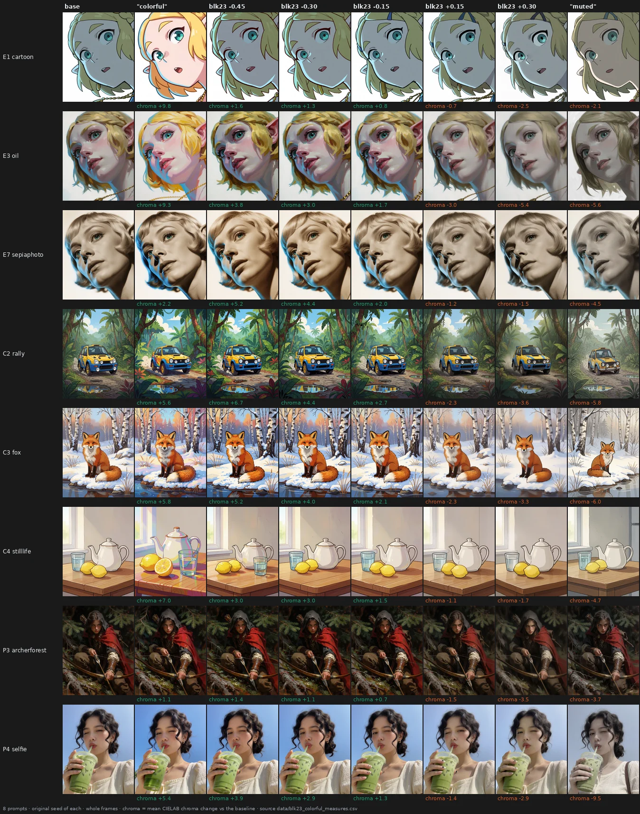
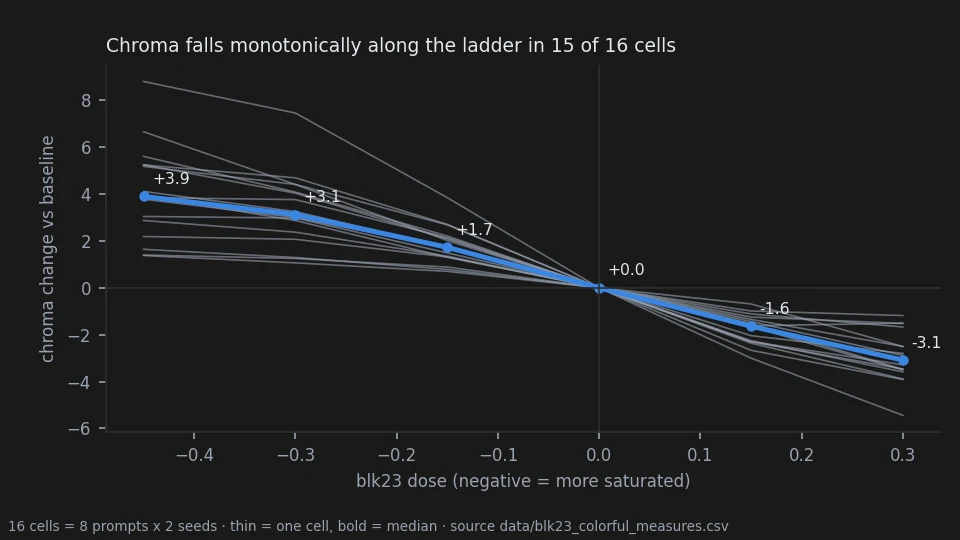
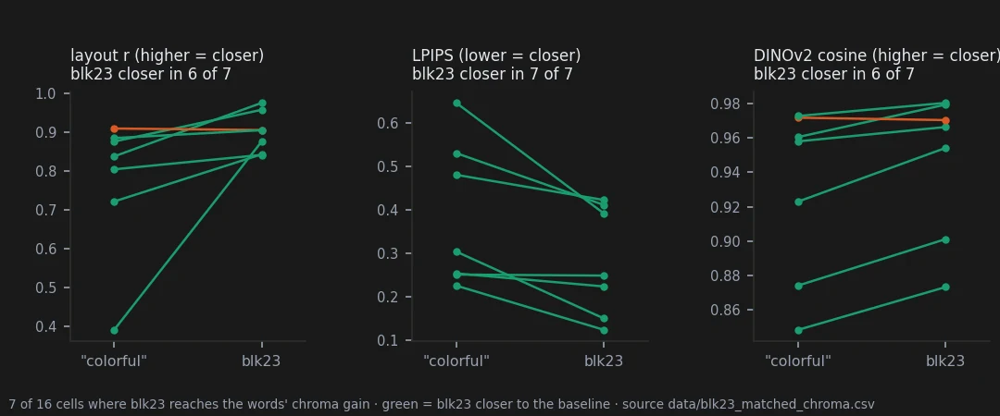

Weight-Space Steering in Diffusion Models
A public lab notebook. Every number on this page comes from a file in
data/, and every figure is built by a script that reads one.
What holds, and what does not
| Claim | What it rests on | |
|---|---|---|
| Holds | Scaling block 23 alone moves the saturation of a Krea-2 picture in one direction, monotonically with the dose and roughly in proportion to it. | Pre-registered. Chroma falls strictly from -0.45 to +0.30 in 15 of 16 prompt-seed cells (threshold 14); doubling the dose from -0.15 to -0.30 multiplies the gain by 1.76 (window 1.6-2.4). On every older render with a blk23 arm, 83 of 83 move chroma the expected way. |
| Holds | Where blk23 reaches the same saturation gain as adding "colorful, vivid highly saturated colors" to the prompt, it leaves the rest of the picture closer to the original than the words do. | Pre-registered on layout r: 6 of 7 scorable cells, median +0.08. Confirmed afterwards with standard metrics: LPIPS 7 of 7, DINOv2 6 of 7. The comparison is possible in 7 of 16 cells only: in the other 9 the words add more saturation than blk23 at its strongest tested dose. |
Holds128 renders · 8 prompts · 4 seeds · pre-registered · 2026-10-04
One block that turns saturation up and down
The direction I'm chasing. If the weights hold knobs, one of them should do one thing everywhere. Block 23 looked like a saturation control on every bench where I pushed it, and I wanted to know whether it could replace the words people type to get colour.
What would kill it. Colour moving the wrong way, or not growing with the dose, on more than two of sixteen prompt-seed pairs — or the words "colorful" disturbing the picture less than the block at the same colour gain.
Where we are. The knob is real and gentle. It moves colour the right way almost everywhere and touches the rest of the picture less than the words do, but on half the prompts the words simply reach further.
In two minutes
Krea-2 has 28 transformer blocks. Multiplying the weights of block 23 by a little more than one lowers the saturation of the picture; by a little less than one, raises it. I rendered eight prompts — a cartoon elf, an oil-painted elf, a sepia photograph, a rally car, a fox, a still life, an archer, a selfie — at two seeds each, along a ladder of five doses, and next to the same prompts with "colorful, vivid highly saturated colors" or "muted colors, desaturated, low saturation" added to the text.

Read the sheet by columns. Along the ladder the picture stays the same picture and only its colour moves. The second column is what the words do: the cartoon elf turns blonde and is redrawn, the still life gains a cut lemon and a pink table. The words do more — more colour and more of everything else.
The verdict
Block 23 is a saturation knob: monotone on 15 of 16 cells and roughly proportional to the dose. At the same colour gain it disturbs the picture less than the words, on every standard metric tried. It is a gentle knob — on 9 of 16 cells the words reach more colour than the block at its strongest tested dose — and its desaturating side is weaker and less clean than its saturating one.
Why I might be wrong
- One observer, not blind. The eye pass is mine, and I knew which column was which. All 128 images are published so anyone can look.
- The matched comparison rests on 7 cells. The pre-registration set no minimum number of scorable cells. Nine cells could not be compared because the words went beyond the ladder.
- Measures of "the rest of the picture" are imperfect. Layout r sees small shifts the eye does not call a change of content; LPIPS and DINOv2 agree with it here, but all three are coarse.
- One wording per direction. Other phrasings, or the words at the start of the prompt, may behave differently.
- The desaturating side has side effects I marked by eye on 8 of 16 cells: softening, and on the selfie a skin that turns greenish.
The data
How it was measured
Each image is compared with the baseline of the same prompt and seed in CIELAB at 64×80: mean chroma change, and layout r, the correlation of the lightness channel with the baseline. The words are matched to the ladder by linear interpolation of chroma between rungs; layout r, LPIPS and DINOv2 cosine are interpolated at the same point.
Direction and proportion

| test | registered threshold | result |
|---|---|---|
| chroma falls strictly along the ladder | ≥ 14 of 16 | 15 of 16 |
| gain at -0.30 over gain at -0.15, median | 1.6 – 2.4 | 1.76 |
The one exception is the sepia photograph at seed 4669201, where +0.15 and +0.30 remove almost
the same colour (−1.62, −1.51). Before this bench, every render with a blk23 arm in the
repository — 83 images across five benches — already moved chroma the expected way
(data/blk23_saturation_all.csv).
Against the words

| median over 16 cells | layout r | |
|---|---|---|
| "colorful" | chroma +5.7 | 0.80 |
| blk23 −0.45 | chroma +3.9 | 0.87 |
In 9 of 16 cells the words add more colour than blk23 at −0.45; on the cartoon elf +9.8 against
+1.6. On the sepia photograph it runs the other way: blk23 +5.2, the words +2.2. My eye, asked
which of the two changed the content more with colour ignored, said the words in 9 of 16 cells,
blk23 in 2, equal in 5 (data/blk23_colorful_eye_alessandro.csv, deposited before the numbers).
No measured quality cost: BRISQUE moves by +0.9 for blk23 −0.45 and −0.95 for the words;
CLIP-IQA by at most 0.02 (data/standard_metrics_summary.csv).
The controls
Every image of the 26 conditions that already existed on older benches at the original seed
was re-rendered and came out pixel-identical (docs/RENDERS_2026-10-04_blk23_colorful.md).
Reproducing this
model:
checkpoint: krea2_turbo_bf16.safetensors
weight_dtype: default
sha256: not recorded — the file is outside the repository
sampling:
sampler: euler_ancestral
steps: 9
cfg: 1.0
denoise: 1.0
scheduler: simple
resolution: 1024x1280
vae: qwen_image_vae.safetensors
text_encoder: qwen3vl_4b_bf16.safetensors (CLIPLoader type krea2)
tuner:
node: ArthemyKrea2ModelTuner, after ArthemyKrea2ResetPatcher
version: not recorded — the tuner is a separate repository
mode: Real Value, driven by a 34-slot vectors_override (slot 23 = signed dose)
prompts:
file: data/blk23_colorful_plan.csv
ids: [E1_cartoon, E3_oil, E7_sepiaphoto, C2_rally, C3_fox, C4_stilllife, P3_archerforest, P4_selfie]
seeds: [2718281, 3141592, 1618033, 4669201]
conditions:
- name: b23_m0.450
dose: -0.450
measured_D: not measured; the dose is a per-block gain, not a calibrated displacement
- name: b23_m0.300
dose: -0.300
measured_D: not measured
- name: b23_m0.150
dose: -0.150
measured_D: not measured
- name: b23_p0.150
dose: +0.150
measured_D: not measured
- name: b23_p0.300
dose: +0.300
measured_D: not measured
- name: txtpos
dose: 0
measured_D: 0 (prompt + ", colorful, vivid highly saturated colors")
- name: txtneg
dose: 0
measured_D: 0 (prompt + ", muted colors, desaturated, low saturation")
outputs:
folder: benchmark_blk23_colorful
manifest: data/blk23_colorful_plan.csv
analysis:
script: experiments/analyze_blk23_vs_colorful.py
sha256: 3ac2b673851d036e18658833016c32a774cc90ba6754753ce89c62fc9897d311
produces: data/blk23_colorful_measures.csv, data/blk23_colorful_test.csv
related: experiments/analyze_standard_metrics.py, data/blk23_matched_chroma.csv
Provenance
- Renders. benchmark_blk23_colorful (128).
- Pre-registration:
docs/prereg_blk23_vs_colorful.md, with amendment 1 (eye page also for the desaturating side). Committed with its scoring code in 76e8180, before any render. - Result documents:
docs/blk23_vs_colorful_result.md,docs/standard_metrics_result.md. - Data:
data/blk23_colorful_measures.csv,data/blk23_colorful_test.csv,data/blk23_matched_chroma.csv,data/blk23_colorful_eye_alessandro.csv,data/blk23_saturation_all.csv,data/standard_metrics_c47.csv. - Exploratory history: the knob was first noticed on the single-block benches
(
docs/single_blocks_exploration_synthesis.md§5).